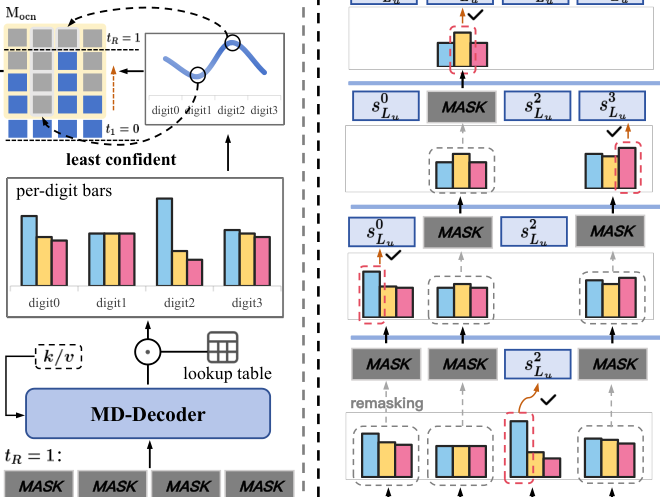

DiffGRM: Diffusion-based Generative Recommendation Model (基于扩散的生成式推荐模型)
- 会议/期刊: WWW 2026 (Proceedings of the ACM Web Conference 2026, pp. 5853-5864)
- 作者与机构: Zhao Liu, Yichen Zhu, Yiqing Yang, Xiao Lv, Guoping Tang, Rui Huang, Qiang Luo, Ruiming Tang, Kun Gai, Guorui Zhou（快手科技，Kun Gai 为独立研究者）
- 推荐链路定位: 端到端生成式召回（Next-Item SID 生成）
- 研究方向: 生成式推荐与离散语义 ID / 序列推荐
- 论文原文: https://arxiv.org/abs/2510.21805v2
- 开源代码: https://github.com/liuzhao09/DiffGRM
TL;DR (1分钟核心速览)
生成式推荐（GR）把物品编码为 \(n\)位语义 ID（SID）并用自回归（ARM）逐位生成，但 SID 存在项内一致性（\(n\) 位共同指向一个物品，却被左到右因果掩码割裂）与位间异质性（不同位语义粒度与预测难度差异大，却被等权监督）两大结构性矛盾。DiffGRM 用掩码离散扩散（MDM）替换 ARM 解码器，实现双向上下文与任意顺序并行生成，并在分词（PSE）、训练（OCN）、推理（CPD）三处做任务定制。在 Amazon 三数据集 Leave-Last-Out 全库排序协议下，NDCG@10 相对最强基线提升 6.9%–15.5%。
Background & Motivation (背景与核心矛盾)
- 主流范式: TIGER/RPG 等 GR 方法先用 RQ-VAE/RQ-Kmeans 将物品内容量化为 \(n\) 位 SID，再用 GPT 式因果 Transformer 逐位自回归预测下一位 token。
- 前人局限一（信息壁垒）: 因果注意力使第 \(k\)位只能看到前缀，无法利用后序位做交叉验证，\(n\) 位联合确定一个物品的"项内一致性"被压缩为单条因果路径监督。
- 前人局限二（监督失衡）: 不同位（如 Category 易、Brand 难）预测难度悬殊，但 next-token 目标对每位等权，导致易位过训练、难位欠训练，难位错误还会沿因果链传播。
- 核心洞察 (Key Insight): 掩码扩散天然具备双向上下文、并行生成与随机掩码带来的稠密监督，与 SID 结构更契合；但直接套用会遭遇"监督信号组合爆炸"（\(n\)层码本产生\(n2^{n-1}\)个目标-上下文信号，全覆盖至少需\(2^n-1\)种掩码配置）与"推荐需 Top-\(K\) 多样候选"两大新问题。
- 本文切入点: 以 MDM 为骨架，在分词端解耦位间依赖、在训练端按不确定性聚焦难位、在推理端做置信度引导的全局并行束搜索。
Method (核心方法设计)
1. 整体框架 (Overall Architecture)
物品先经 PSE 分词为 \(n\)位解耦 SID，用户历史 SID 序列经嵌入拼接投影后送入 Transformer 编码器得到\(\mathbf{H}_u\)；掩码扩散解码器（MD-Decoder）对部分掩码的\(n\)位输入做非因果自注意力（位间双向互看）与对\(\mathbf{H}_u\)的交叉注意力，并行预测所有被掩码位。训练时 OCN 用一次全掩码探针估计各位难度，构造由轻到重的嵌套掩码视图，编码器\(\mathbf{k}/\mathbf{v}\)只算一次并在各视图间复用；推理时 CPD 从全掩码出发，按置信度优先填充并做全局并行束搜索，输出去重后的 Top-\(K\) SID。
flowchart TD
A["物品内容特征 → PSE(OPQ) 分词为 n 位 SID"] --> B["用户历史 SID 序列 → Transformer 编码器 H_u"]
B --> C["全掩码探针估计各位难度 δ(k)"]
C --> D["OCN: 按难度排序构造嵌套掩码视图 → MD-Decoder 并行预测"]
D --> E["CPD: 置信度优先填充 + 全局并行束搜索"]
E --> F["Top-K SID 候选去重输出"]
2. 关键设计拆解 (Key Designs)
-
并行语义编码 PSE（解耦位间依赖）: RQ 的残差层级使后位依赖前位，既加剧位间信息不均衡，又与并行任意序生成冲突。PSE 改用 OPQ 式"旋转-切分-独立量化"：学习正交旋转 \(\mathbf{R}_o\)最小化量化失真，将\(\tilde{\mathbf{h}}_i=\mathbf{R}_o\mathbf{h}_i\)均分为\(n\)个子向量，各自在独立码本\(\mathcal{C}^{(k)}\)上最近邻取码\(s_i^k=\arg\min_j\|\mathbf{v}_i^k-\mathbf{c}_j^{(k)}\|_2^2\)。各子空间信息量均衡且无顺序耦合，天然匹配扩散的任意序预测。
-
On-policy 相干加噪 OCN（把监督预算压到难位）: 随机掩码使监督碎片化且组合爆炸。OCN 先对全掩码输入跑一次解码器，得每位置信度 \(p^{(k)}_{\max}=\max_v p_\theta^{(R,k)}(v)\)，定义难度\(\delta^{(k)}=1-p^{(k)}_{\max}\)，按\(\delta^{(k)}\)降序得排列\(\sigma\)；第\(r\)个视图掩掉最难的\(m_r\)位（\(1\le m_1<\cdots<m_R\le n\)），即\(\mathcal{M}^{(r)}=\{\sigma(1),\dots,\sigma(m_r)\}\)，其余位保留干净嵌入。嵌套掩码使可见上下文随视图递增、梯度持续聚焦同一批难位，避免组合爆炸并稳定优化。总损失为各视图掩码位交叉熵均值\(\mathcal{L}=\frac{1}{R}\sum_{r=1}^{R}\mathcal{L}^{(r)}\)，其中\(\mathcal{L}^{(r)}=\frac{1}{|\mathcal{M}^{(r)}|}\sum_{k\in\mathcal{M}^{(r)}}-\sum_{v=0}^{M-1}\tilde{q}_v^{(k)}\log p_\theta^{(r,k)}(v\mid\mathbf{y}^{(r)},\mathbf{H}_u)\)，\(\tilde{\mathbf{q}}^{(k)}\) 为标签平滑后的 one-hot 目标。
-
置信度引导并行去噪 CPD（面向 Top-\(K\)的全局束搜索）: LLM 侧 MDM 惯用贪心填单输出，无法满足推荐的多候选需求。CPD 在束宽\(B_{\text{act}}\)下维护活跃部分 SID 集合，每步对所有分支的"待填位-码字"对打分\(s_{r-1}(b,k,c)=\text{score}_r(b)+\log p_\theta(y_k=c\mid\mathbf{y}_b^{(r)},\mathbf{H}_u)\)，截断保留 Top-\(B_{\text{act}}\)，优先填充高置信位，最终去重取 Top-\(K\)。编码器\(\mathbf{k}/\mathbf{v}\) 全程缓存，额外打分在位上并行，增加算力但不拉长关键路径。
训练与推理开销: 训练时编码器只跑一次、\(R\)个视图共享，复杂度\(O(N^2d_m)+R\cdot O(n^2d_m+nNd_m)\)，工业长历史场景下编码器主导，与 ARM 基本同阶；推理解码项多一个\(n\)因子（\(O(B_{\text{act}}n^2Nd_m)\)），但\(n\)很小、\(N\) 最大，端到端墙钟延迟接近 ARM。训练采用标签平滑交叉熵，无需负采样。
Experimental Setup & Evaluation Protocol (实验设置与评估协议)
- 数据集与预处理: Amazon Reviews 三个类目，按用户评论时间排序成序列，未额外做 k-core 过滤（沿用 TIGER/RPG 标准处理）。
| 数据集 | #Users | #Items | #Interactions | 平均序列长 \(\bar{t}\) | 场景说明 |
|---|---|---|---|---|---|
| Sports | 35,598 | 18,357 | 260,739 | 8.32 | 运动户外 |
| Beauty | 22,363 | 12,101 | 176,139 | 8.87 | 美妆 |
| Toys | 19,412 | 11,924 | 148,185 | 8.63 | 玩具游戏 |
- 数据划分与防穿越: 标准
Leave-Last-Out——每序列最后一项测试、倒数第二项验证、其余训练。 - 排名评测协议: 基于 SID 的
Full-Ranking全库排序（对全部物品 SID 打分排序），指标 Recall@\(\{5,10\}\)与 NDCG@\(\{5,10\}\)，取验证集最优 checkpoint 报测试集结果。 - 对比基线与超参: 三类基线——ID 判别式（GRU4Rec、HGN、SASRec、BERT4Rec）、语义增强判别式（FDSA、S3-Rec、VQ-Rec、RecJPQ）、SID 生成式（TIGER、HSTU、ActionPiece、RPG）。隐藏维度 \(d_m=256\)（Sports/Beauty）与\(1024\)（Toys），显著性用配对 t 检验\(p<0.05\)。
Key Experimental Results (实验关键数据)
1. 主实验对比 (Main Results)
| 方法 | Sports N@10 | Beauty N@10 | Toys N@10 | Sports R@10 | Beauty R@10 | Toys R@10 |
|---|---|---|---|---|---|---|
| SASRec | 0.0192 | 0.0318 | 0.0374 | 0.0350 | 0.0605 | 0.0675 |
| S3-Rec | 0.0204 | 0.0327 | 0.0376 | 0.0385 | 0.0647 | 0.0700 |
| VQ-Rec | 0.0173 | 0.0383 | 0.0423 | 0.0300 | 0.0664 | 0.0737 |
| TIGER | 0.0225 | 0.0384 | 0.0432 | 0.0400 | 0.0648 | 0.0712 |
| HSTU | 0.0215 | 0.0389 | 0.0357 | 0.0414 | 0.0704 | 0.0669 |
| ActionPiece | 0.0264 | 0.0424 | — | 0.0500 | 0.0775 | — |
| RPG | 0.0263 | 0.0464 | 0.0490 | 0.0463 | 0.0809 | 0.0869 |
| DiffGRM | 0.0305 | 0.0502 | 0.0524 | 0.0550 | 0.0876 | 0.0834 |
| Improv. | +15.53% | +8.19% | +6.94% | +10.00% | +8.28% | -4.03% |
DiffGRM 在 12 项指标中 11 项第一；唯一落后项为 Toys 的 Recall@10（-4.03%），但同数据集 NDCG@5/@10 仍领先（+13.47%/+6.94%），说明其 Top-\(K\) 排序质量更高而非召回覆盖更广。
2. 消融实验 (Ablation Study, NDCG@10)
| 变体 | Sports | Beauty | Toys |
|---|---|---|---|
| (1.1) PSE → RQ-Kmeans | 0.0200 | 0.0343 | 0.0305 |
| (1.2) PSE → Random | 0.0138 | 0.0300 | 0.0206 |
| (2.1) w/o OCN（随机掩码） | 0.0250 | 0.0368 | 0.0385 |
| (2.2) w/o On-policy（仅相干掩码） | 0.0263 | 0.0455 | 0.0430 |
| (3.1) w/o CPD（固定随机序束搜索） | 0.0273 | 0.0496 | 0.0499 |
| DiffGRM | 0.0305 | 0.0502 | 0.0524 |
3. 关键实验发现 (Key Findings)
- 分词解耦是扩散生效的前提: PSE 换成 RQ-Kmeans 后 Toys NDCG@10 从 0.0524 暴跌至 0.0305（-41.8%），换随机 token 更差（0.0206），证明残差层级依赖与双向并行去噪根本冲突，语义结构本身也不可丢。
- OCN 的两级增益可分离: 去掉 OCN 全随机掩码在 Toys 掉到 0.0385（-26.5%），仅保留相干掩码、去掉 on-policy 选位回升到 0.0430，说明"嵌套相干视图"贡献主体、而"按难度选位"再补一刀，二者叠加才达 0.0524。
- 难位优先 + 静态排序是最优策略: 表 5 中"least+static"（本文）在 Beauty/Toys 均最优；改为"most+refresh"（优先填高置信位并逐步刷新）后 w/o CPD 相对 CPD 的跌幅达 -19.11%/-24.47%，说明模型一旦依赖易位优先顺序，难位欠训练会在顺序扰动下剧烈崩坏；同时 OCN 在更低有效样本通过次数（ESP）下即追平 \(k\) 倍相干路径加噪，样本效率更高。
Highlights & Limitations (亮点、对比与审稿批判)
- 与代表作对比 (vs. Prior Work): 与 TIGER 的本质区别是从"因果逐位生成"转为"双向并行去噪"，监督从单条因果路径变为多视图稠密信号；与 RPG 同为并行预测 SID，但 RPG 仍基于多 token 分类目标 + 图引导解码，DiffGRM 用扩散的掩码-去噪范式统一了训练与推理，并显式处理位间难度异质；与 LLM 侧 MDM 相比，本文针对推荐补充了 PSE 解耦分词与 Top-\(K\) 全局束搜索两处任务定制。
- 可迁移亮点: (i) "全掩码探针估难度 → 嵌套掩码聚焦难位"的 OCN 思路可迁移到任何多位离散码生成任务（如多模态量化检索、分层分类预测）；(ii) 编码器 \(\mathbf{k}/\mathbf{v}\) 跨视图/跨去噪步缓存复用的工程技巧，对多视图训练与束搜索推理的延迟优化普遍适用。
- 审稿级局限批判: (i) 推理解码项多出 \(n\)倍因子，束宽增大时解码侧占比上升，论文仅给渐近分析而缺少线上 QPS/延迟实测；(ii) 仅在三个 Amazon 公开集上验证，无工业级大规模或冷启动/长尾分桶实验，且 Toys 的 Recall@10 反降，Top-\(K\) 覆盖性优势未被充分解释。
Rating (四维评分)
- 方法创新性 (Novelty): ⭐⭐⭐⭐ （首次将掩码离散扩散引入 SID 生成推荐，PSE/OCN/CPD 三处定制均有明确的结构性动机，但扩散骨架本身非首创）
- 评估协议与实验扎实度 (Protocol & Experiments): ⭐⭐⭐⭐ （三数据集 Full-Ranking + 12 项指标 + 配对 t 检验 + 完整消融与 OCN 策略/束宽分析，缺工业级与长尾分桶验证）
- 写作与数学规范度 (Clarity & Rigor): ⭐⭐⭐⭐ （SID 两大结构性矛盾的动机刻画清晰，公式与复杂度分析完整，但部分符号如视图矩阵 \(\mathbf{M}_{\text{ocn}}\)与掩码集\(\mathcal{M}^{(r)}\) 略显冗余）
- 工业落地与复现价值 (Industrial & Practical Value): ⭐⭐⭐⭐ （代码已开源，训练复杂度与 ARM 同阶、推理靠缓存并行控制延迟，快手工业背景支撑落地可信度，缺线上 A/B 数据）